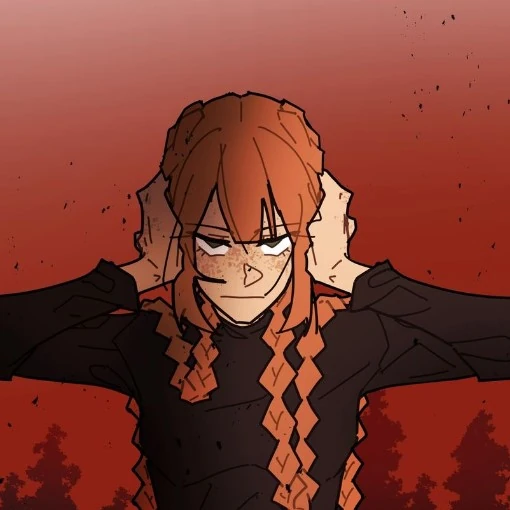

Ashlyn Banner is the main protagonist of School Bus Graveyard. She debuted in Episode 1 and is a typical teenage girl. It has been confirmed by Red that despite her father saying “16 years of existence,” Ashlyn is 15 at the beginning of the comic.
Ashlyn is introverted and finds socializing exhausting. She dislikes talking to anyone outside her family and has never had a friend before the events of the story. She is blunt, straightforward, and highly observant. She loves dance, practices ballet, and uses a DDR mat at home. She was taught kickboxing by her parents but refused other forms of self‑defense. Despite her quiet nature, she becomes a natural leader when danger strikes.
Ashlyn is 4'11" with pale, freckled skin. She has hip‑length ginger hair, usually worn in two braids, and slate green eyes. In the phantom dimension, her hair becomes chin‑length and fluffy. She often wears army‑themed clothing and carries a black backpack. Due to tinnitus and hyperacusis, she frequently wears earplugs or headphones.